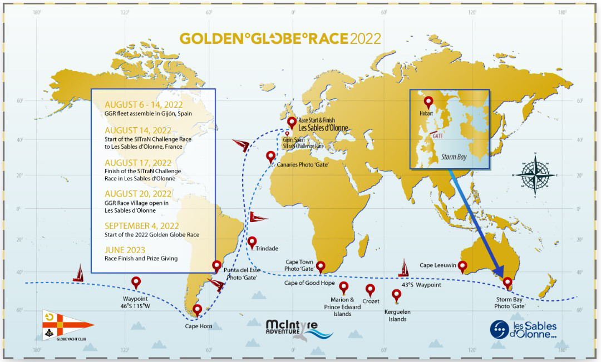

Expedition 1: An Odyssey of Adventure
Salient Features
- Country: France
- Date: November 2022 - April, 2023
- Route: Solo circum navigation by Abhilash by BAYANAT(ex Gregal)
- Category : Adventure – Competition
- Themes: Exploration & Knowledge sharing
- First Sea based HKC sponsored Expedition. Exchanged hands with BAYANAT prior to GGR Race commencement
Concept
Acquisition of sail boat GREGAL was motivated by OPC’s broader
social objectives. While the boat’s immediate purpose was to support
Abhilash’s participation in GGR, its long-term vision was focused on
pioneering HKC Expeditions. The objective: to leverage GREGAL for
inspiring seabased adventures aimed at exploration, community
engagement, and fostering maritime heritage.
Objectives
- The project was taken up with larger view of HKC social objectives to be implemented through bigger sailing boat which can accommodate 10-15 people and go around the world as a research platform for ocean science, climate change, pollution, alternate energy.
- To transfer knowledge through our association with Abilash Tomy.
Team
Cmdr. Abhilash Tomy and HKC Team until hand exchanged with BAYANAT
General Information
- An accidental telephone with Abhilash lead to acquisition of sail boat GREGAL (RUSTLUR 36) from celebrity French sailor Philip Piche to enable him participate in GGR(2022-2023) for Solo Circum Navigation by sea around the globe
- Thus it became HKC expedition-01.
- HKC roots germinated in 1998 when ODC foundation was established, Several small & medium social projects were carried out. This eventually evolved in establishing HKC Projects & Expeditions
Route & Places visited :
Solo Circum Navigation by sea around the globe by Abhilash under
BAYANAT

Impact and Awareness
Abhilash’s journey in the GGR 2022-23 aboard BAYANAT was a triumphant one, culminating in a stellar second-place finish. This remarkable feat not only demonstrated exceptional skill and perseverance but also became the foundation for the HKC Sea Expeditions.
A chance call from a close friend in France soon after the race brought the team to Normandy, where new opportunities for sea-based adventures unfolded.
Essence
Cmdr. Abhilash Tomy and HKC Team until hand exchanged with BAYANAT
Photo Gallery
 Abhilash Tomy met with VIkram Naik
Abhilash Tomy met with VIkram Naik
 On Arrival Cdr Abhilash Tomy (India) – 2nd / 19 Apl 23 /236
days at Sea
On Arrival Cdr Abhilash Tomy (India) – 2nd / 19 Apl 23 /236
days at Sea
 Kirsten Neuschäfer (S. Africa) - 1st (233 days at Sea.)
Kirsten Neuschäfer (S. Africa) - 1st (233 days at Sea.)
 Proud moment for Indians present at the event
Proud moment for Indians present at the event
 Simon Curwen (UK) – Greatest of the great – came 1st but
disqualified for technical reasons! Was 1000 miles ahead.
Simon Curwen (UK) – Greatest of the great – came 1st but
disqualified for technical reasons! Was 1000 miles ahead.